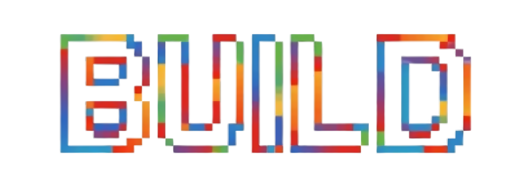

Microsoft

//localhost: NoidaExploring the next generation of AI, cloud, and developer innovation.
Technology conferences are more than just product announcements—they are places where ideas are exchanged, communities are built, and the future of software development begins to take shape.
I recently had the opportunity to attend Microsoft Build //localhost: Noida, an event that brought together developers, students, professionals, cloud architects, AI enthusiasts, and technology leaders to explore Microsoft's latest innovations.
Walking into the venue, the excitement was immediately noticeable. Developers from different backgrounds were discussing AI, cloud technologies, Azure, GitHub Copilot, and modern development practices. The atmosphere reflected one thing clearly: Artificial Intelligence is no longer an emerging technology—it has become one of the foundations of the next generation of software.
The event wasn't simply about introducing new technologies—it demonstrated how Microsoft's ecosystem is enabling developers to build intelligent, scalable, and enterprise-ready applications. Every session offered practical insights into how AI is reshaping software engineering and how developers can leverage these advancements in real-world projects.
The Event Atmosphere
One of the things I appreciated most about the event was its vibrant and collaborative environment. The venue was filled with developers, students, industry professionals, and Microsoft experts, all eager to exchange ideas and learn from one another.
Whether it was during the keynote sessions, networking breaks, or technical discussions, there was a shared enthusiasm for innovation. It was inspiring to see people from different backgrounds coming together with a common goal—to explore the future of technology.

The Evolution of AI: From Assistants to Intelligent Systems
One of the strongest themes throughout the conference was the evolution of Artificial Intelligence.
For years, AI has primarily been viewed as a chatbot or virtual assistant capable of answering questions or generating content. However, Microsoft showcased a much broader vision.
Today's AI systems are evolving beyond simple text generation. They are becoming reasoning systems capable of understanding context, making decisions, coordinating multiple tasks, interacting with external tools, and producing meaningful outcomes.
Instead of asking,
What can AI answer?
the industry is now asking,
What can AI accomplish?
That shift in thinking completely changes how developers approach building software.

Azure Cobalt 200 Virtual Machines — Microsoft's AI Infrastructure
One of the most technically fascinating sessions introduced Azure Cobalt 200 Virtual Machines.
Behind every powerful AI model lies equally powerful infrastructure. Microsoft explained how its custom-built Cobalt processors are designed specifically for cloud-native workloads and modern AI applications.
Unlike traditional processors built for general-purpose computing, these processors are optimized for:
- High-performance AI workloads
- Better energy efficiency
- Enterprise scalability
- Faster inference
- Improved cloud performance
This session highlighted that innovation in AI doesn't stop at models—it extends deep into the hardware powering the cloud.
Azure AI Foundry — Building Enterprise AI Applications
Another major highlight was Azure AI Foundry.
Building AI-powered applications involves much more than connecting an LLM to an interface. Azure AI Foundry provides developers with a complete ecosystem for building, customizing, evaluating, deploying, and monitoring enterprise-ready AI applications.
Some capabilities include:
- Foundation model integration
- Prompt engineering
- Fine-tuning
- Model evaluation
- Enterprise data integration
- Responsible AI practices
- Secure deployment
- Monitoring and observability
The session reinforced the importance of building AI systems that are not only intelligent but also secure, reliable, and production-ready.

Microsoft Discovery — Accelerating Scientific Research
Among all the announcements, Microsoft Discovery stood out as one of the most inspiring.
Instead of focusing only on software development, Microsoft demonstrated how AI can assist scientists and researchers by accelerating experimentation, analyzing complex datasets, identifying patterns, and generating new hypotheses.
It was exciting to see AI being positioned as a catalyst for innovation in fields such as healthcare, biology, chemistry, and environmental science.

CoreUtils for Windows
As someone who frequently works across different development environments, I found the announcement of CoreUtils for Windows particularly interesting.
Bringing familiar Linux command-line utilities directly to Windows reduces friction for developers and creates a smoother cross-platform development experience.
Although it may seem like a smaller announcement compared to AI, improvements like these have a significant impact on developers' day-to-day workflows.
Agentic AI — The Highlight of the Event
The concept that fascinated me the most throughout the conference was Agentic AI.
Traditional AI systems generally follow a simple pattern: Input → Output
Agentic AI introduces an intelligent orchestrator that performs several steps before generating a response.
These include:
- Understanding user intent
- Breaking problems into subtasks
- Retrieving relevant information
- Using external tools
- Reasoning through multiple steps
- Evaluating intermediate outcomes
- Producing an informed response
This architecture enables AI systems to solve much more complex problems than traditional conversational models.
The session completely changed my perspective on how intelligent software systems will be built in the coming years.
Learning Beyond the Sessions
While the technical sessions were incredibly insightful, one of the most rewarding aspects of the event was the opportunity to connect with fellow developers.
Conversations during networking breaks often led to discussions about open-source projects, AI experimentation, cloud computing, career growth, and emerging technologies.
These interactions reminded me that some of the best learning happens outside the presentation hall.
Appreciation for the Speakers
A heartfelt thank you to the incredible speakers who shared their knowledge and practical experiences throughout the event.
- Shivani Joshi
- Manisha Talreja
- Sarthak Jain
Their sessions were informative, engaging, and filled with practical insights into Microsoft's AI ecosystem, cloud technologies, and developer tools.
Capturing Memories
Events like Microsoft Build are not just about learning—they're also about creating memorable experiences and building lasting connections within the developer community.
Taking a few moments to capture memories with fellow attendees made the experience even more special.
Key Takeaways
The conference left me with several important lessons:
- AI is evolving from assistants to intelligent reasoning systems.
- Enterprise AI requires robust infrastructure, governance, and scalability.
- Microsoft's investment in custom hardware demonstrates the growing importance of AI infrastructure.
- Platforms like Azure AI Foundry simplify the journey from AI experimentation to production.
- AI has the potential to transform not only software development but also scientific research and enterprise innovation.
- Continuous learning and community engagement remain essential for developers in this rapidly evolving landscape.
Final Thoughts
Microsoft Build //localhost: Noida was much more than a technical conference—it was an opportunity to witness the future of software development unfolding in real time.
From Azure Cobalt 200 Virtual Machines and Azure AI Foundry to Microsoft Discovery, CoreUtils for Windows, and the transformative potential of Agentic AI, every session provided valuable insights into where technology is headed.
The event reinforced that the future belongs to developers who are willing to continuously learn, experiment, and embrace emerging technologies. AI is no longer just a feature—it is becoming an integral part of software engineering, cloud computing, research, and enterprise solutions.
I am grateful to Microsoft for organizing such an insightful event and to all the speakers for sharing their expertise. I leave inspired to continue exploring these technologies, applying these learnings to future projects, and contributing to the ever-growing developer community.
Every conference leaves behind knowledge, connections, and memories. Microsoft Build //localhost: Noida gave me all three, and I look forward to applying these learnings in the projects and challenges ahead.